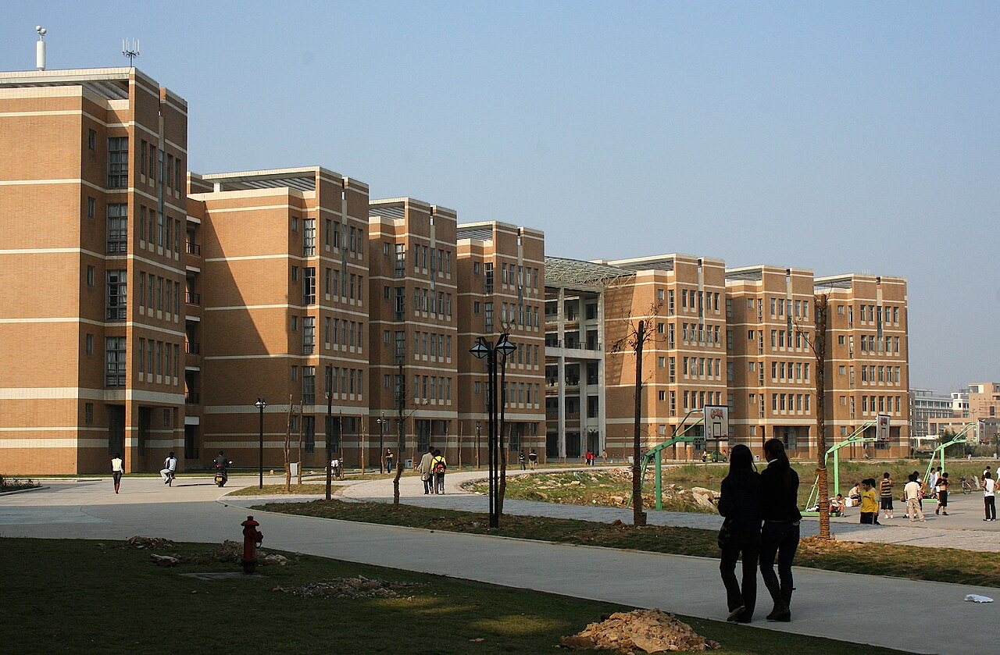

查询设备
按名称或实验室位置寻找所需设备。
设备在哪里、何时可用、申请到了哪一步——这些问题应当有直观的答案。
LabFlow 将查找、预约、审批和报修串成一条可追踪的路径。学生少等待，教师更从容。
设备目录直接读取实验室服务器。教师在管理工作台新增、编辑或删除后，这里会同步变化。
一次完整的使用，从这里展开
按名称或实验室位置寻找所需设备。
查看设备用途、位置与当前可用情况。
选择日期和时段，系统检查预约冲突。
申请进入待审核列表，学生可随时查看。
教师通过或拒绝，状态同步到预约记录。
从设备名称或实验室位置开始搜索。

福州大学校园建筑 · 摄影：Rolf Baur（公共领域）从这里，开始下一次实验。